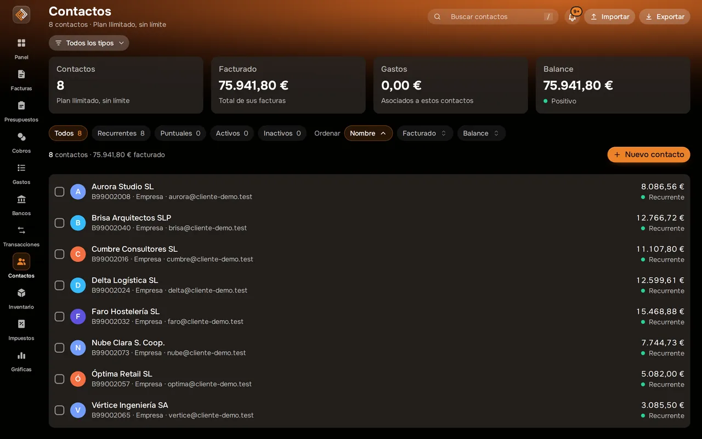

Clientes
Tus clientes, con todo lo que les has facturado.
Guarda clientes y proveedores con sus datos fiscales, impórtalos desde otra herramienta y consulta qué te deben y cómo pagan.

Captura real de Facturales con datos de ejemplo.
Qué puedes hacer
Fichas completas
Nombre, NIF/CIF, dirección y contacto, listos para facturar.
Importa en Excel o CSV
Reconoce las cabeceras habituales y te enseña las filas con error antes de confirmar; los duplicados por NIF se omiten.
Exporta
Descarga todos tus contactos en CSV cuando quieras.
Cobros por cliente
Pendiente, plazo medio de pago y valoración de cada cliente.
Factura al vuelo
Crea el cliente desde la propia factura si aún no existe.
Búsqueda
Encuentra cualquier contacto al instante.
Cómo funciona
Importa
Sube tu lista de clientes en Excel o CSV.
Factura
Selecciona el cliente y sus datos se rellenan solos.
Sigue
Consulta su historial y lo que tiene pendiente.
Preguntas frecuentes
¿Cuántos clientes puedo tener?
10 en Starter, 150 en Pro e ilimitados en Ilimitado.
¿Puedo migrar desde otra herramienta?
Sí. Exporta tus contactos a Excel o CSV desde tu herramienta actual e impórtalos en Facturales.
Pon orden en tus finanzas esta semana
Crea tu cuenta, emite tu primera factura e importa tu primer extracto. Tienes 14 días de prueba en cualquier plan y puedes cancelar cuando quieras.